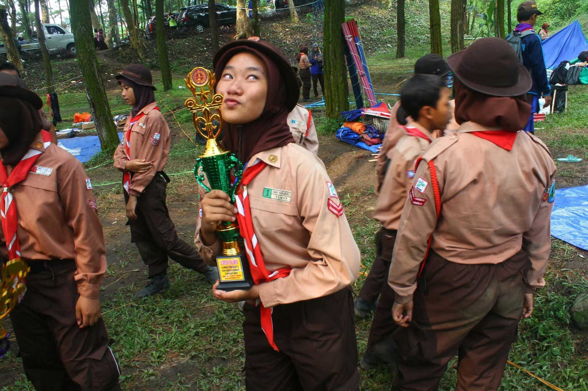

AKTIVITAS



| Pengalaman Organisasi : | |||
| 1. Pramuka | (2015-2017) | : | Wakil Pratama |
| 2. Ekstrakurikuler Tari | (2019-2021) | : | Ketua Tari |
| 3. UKM Tari | (2021-2022) | : | Anggota Divisi Pengajaran Tradisional |
| 4. UKM Tari | (2022-sekarang) | : | Ketua Kedisiplinan UKM Tari |
| Pencapaian : |
| 1. Juara 2 LT II Penggalang SMP (2016) |
| 2. Juara I Lomba Tartil tingkat Kabupaten (2017) |
| 3. Juara II Lomba Remo Kidhung Perjuangan Tingkat Kabupaten (2019) |
| 4. Peserta Remo Muri Millenial Dies Natalis UNESA (2019) |
| 5. Juara II Tari Tradisional PORSIMNAS (2022) |